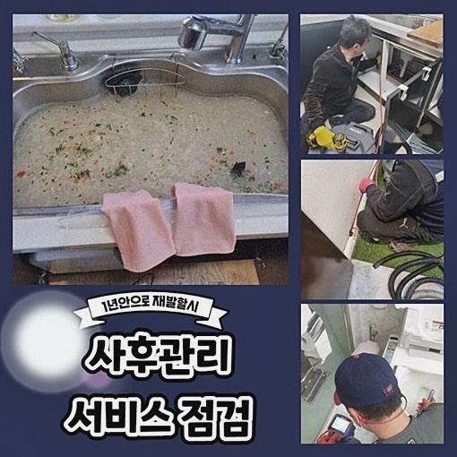
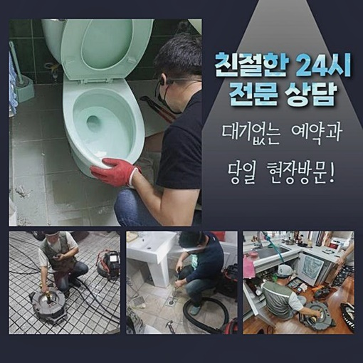
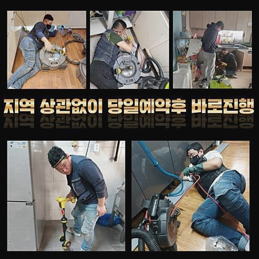
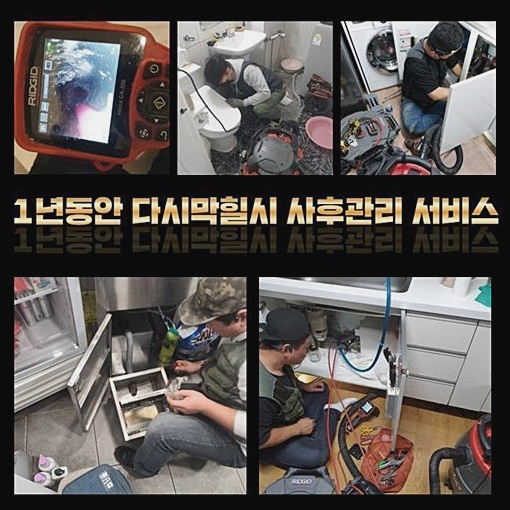
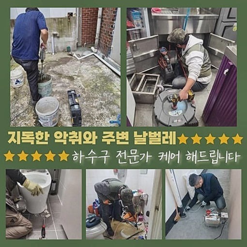
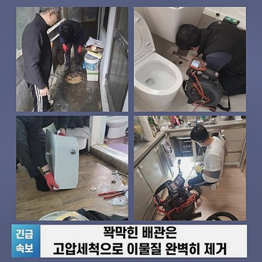
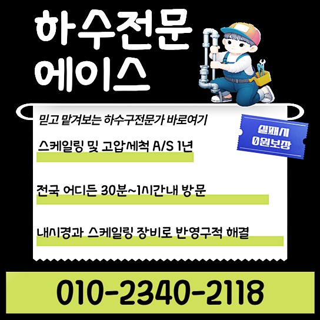

🏠 도봉 방학동씽크대배수관막힘 도봉동 맨홀역류 통수전문
서울 도봉구 싱크대막힘 전문 시공 후기

📋 작업 개요
- 위치: 서울 도봉구, 도봉구, 서울
- 서비스 유형: 싱크대막힘, 하수구막힘, 배관막힘, 맨홀막힘, 역류해결, 뚫는업체, 고압세척
- 작업 일시: 2024. 9. 11. 10:59
- 업체명: 하수구수사대 (010-5615-2118)
🔍 문제 상황
하수라인이 막혀 흐르지 않으면 배관 내부를 보는 기기를 써서 진단후 꽉 막혀버린 배수라인을 뚫어내는 일이 이뤄지게 됩니다
문제 지역의 내부라인 외에 외벽에 설치한 배수관로가 통수되지 않는 상태라면 조속하게 수리과정이 진행됩니다
도봉 방학동씽크대배수관막힘 도봉동 맨홀역류 통수전문
밖으로 위치한 배관들은 라인의 크기도 상당히 크고 모든구간이 단순 구조가 아니라서 현장을 파악하는것부터 물을 순환시키는 이물질제거 작업들까지 고난이도의 과정입니다
혹시라도 건물 바깥쪽에 위치한 문제로 파악하셨다면 많은 경력이 요구되는 정확한 수리작업이 요구되므로 검증된 전문가를통해 시공의뢰들을 맡기셔야합니다
오늘의 의뢰내용은 주차장안에 위치한 메인 하수시스템이 통수되지 않는 문제가 발생했습니다
우선 본관배수라인이 연결되어 있는 건물밖 하수시스템부터 진단을 시작해보았습니다
주차관리자분 말씀을 들어보니 바깥쪽 하수구부터 주된 배관으로 오는데까지 일괄적으로 막혀서 발생하는 문제가 매우 심하다고 이야기 해주셨습니다

🔎 원인 분석
💡 전문가 진단: 정밀 진단 장비를 사용하여 슬러지의 고착 여부를 판명하고 타격/세척 작업을 실시했습니다.
오염물의 특성을 파악해봅니다
그후로는 주차장의 천장에 있는 배관작업을 먼저 하려했으나 층고가 높은곳으로 안전한 여건이 확보불가능 상태라
위험한 부분없이 작업장이 확인되어야 작업들도 원활합니다
우선 위쪽으로 이어진 배관들은 여러개로 이루어져있는데 막혀있는 배관들을 파악해서, 파악한 위치로 내시경카메라를 사용하여 배관들 안쪽의 막힌 사안을 이해하고 노폐물의 특징을 밝혀냅니다
이러한 작업에서 배관의 안쪽으로 안을 볼수있는 선들을 밀어넣어야해서 횡주배관에 작게 진입위치를 뚫어냅니다
모터드릴를 활용해 기기선이 들어가는 적당한 지름으로 구멍을 내고 이부분으로 내시경 장비를 넣어서 종합적인 이물질제거 및 확인을 시작했습니다
모든과정이 완전히 종료되고 난 이후에 타공위치에 관하여 본래의 상태로 메우는 전문작업으로 추후 발생할 수 있는 물이 흐르는 문제 등에 신경쓰시지 않토록 하겠습니다
이와같이 하수관 내부쪽 불순물의 상태를 확인해봤습니다
검사 결과 메인 배관의 종합적인 부위에 불순물이 쌓인 상황이었고 건물외부 하수시스템으로 이어지게되는 지점까지 단단히 굳은 오래된 침전물이 이러한 상황을 야기시켰습니다

🔧 작업 과정
하수로의 벽면쪽에 노폐물이 축적되며 층을이룬 하수라인 슬러지들은 시간이 지날수록 불순물이 새롭게 쌓이며 두껍게 만들어지고 오수가 순환하는 길이 점차 좁아지며 막히는 일이 일어납니다
스케일링 작업기계로 단단한 슬러지들을 제거하면서 작업이 완료되었습니다
안쪽을 파악해보니 메인배관들이 연결된 관의 가장자리 부분쪽에 심각하게 쌓인 슬러지들을 확인했습니다
특히 많은 양의 물들이 흘러가는 주요배관과 외벽의 하수시스템 내벽에는 쉽게 오염물이 쌓이고 석회화 되어버린 슬러지들 상태는 매우 딱딱하고 크키도 커서 배수로의 순환기능을 어렵게하죠
이와같이 하수구에 대한 샤프트기기를 이용한 작업과정으로 또다시 같은 문제가 발생하는 경우들이 없겠죠
작은구멍을 냈던 주요배관으로 내시경을 집어넣어 종합적인 문제를 진단하고 오염물 제거과정에 착수하려 했지만 이번 현장처럼 넓은 배관은 보통 사용하는 기기로는 문제를 해결이 난해합니다
왜 그러냐 하면 전방위적으로 오염원제거 작업이 착수되는데 샤프트기기나 흡입기계는 각각의 구간들에 대하여 세심한 스케일링 작업들이 진행되므로 사이즈가 크게나온 하수관에 일반적인 장비 사용으로는 비합리적인 시간들만 요구되게됩니다
해당케이스에는 높은압력으로 세척이 가능한 기계를 적절히 쓰면서 정체된 관을 뚫어내겠습니다
종합적인 하수시스템의 모양에 맞춰 노즐이 향할 곳을 지정하고 강한 압의 물로 분사시키면서 관의 안쪽벽면과 배관들 안쪽를 세척하는 작업들이 가장 정확한 해결책이라고 할수있습니다
높은압력의 장비 활용이 거듭해서 진행되면서 여러부위로 노즐방향을 향하게 하고 고압으로 배관 내벽의 찌꺼기를 부수며 세정하게 됩니다
찌꺼기가 쌓인 퇴적물도 매우 안좋은 현장이고 메인 배관의 특성상 오염원의 양도 많았기에 시간이 흐를수록 하수시스템의 고장이 점점 잦아질 것으로 예측 되었습니다
이후에 또 이와같은 일이 일어나지 않게끔 조밀하게 과정을 진행하며 잔여 오염원이 없도록 구석구석 강한 압의 물로 이물질제거를 마쳤습니다
이러한 진행과정으로 모든 작업이 끝나게 된후 구멍을 내어놓은 중요 하수관의 일부지점을 처음처럼 막는 과정을 처리한 이후 모든 과정들을 마무리했습니다
이후에 사용시 불편이 없으시도록 꼼꼼하게 구멍을 낸 부분을 회복시켰고 이후로 오수가 흘러가는 데 있어서 불편사항은 생기지 않게끔 조치했습니다


✅ 작업 완료
그후로는 수리된 배관 외에도 문제들이 없었는지 순환이 원활하게 되는지 점검했고 메인의 배수관에서 외벽의 하수시스템까지 순환하는 과정에 있어 원활하게 하수가 내려가는지 전부 확인하였습니다
하수라인의 역류가 생활속 오염물로 문제를 발생시킨다면 메인 배수관부터 건물 바깥쪽 하수배관까지 배수가 전체 모두 느려지게 되므로 이상발견 직후 업체를 알아보시는게 해결책입니다
문제발견시 외부의 도움없이 급히 처리하지 마시고 전체적인 탐색을 해보고 해결이 가능한 기기를 사용하여 원인을 살펴본후 샤프트 기기를 시행하는게 제일 완벽해요
전문적인 케어를 원하신다면 편안한 마음으로 문의주세요




⚠️ 주방 싱크대 배관 막힘 예방 수칙
- ✅ 기름기가 묻은 식기나 프라이팬은 설거지 전 키친타올로 반드시 기름때를 닦아내세요.
- ✅ 주기적으로 싱크대 개수대에 뜨거운 물을 가득 받아 한 번에 내려 배관 내부 기름을 씻어내세요.
- ✅ 배수구 거름망을 미세한 필터로 사용하시고 음식물 찌꺼기가 틈으로 새어 들지 않게 관리하세요.
- ✅ 베이킹소다와 식초를 뜨거운 물과 함께 일주일에 한 번씩 부어주면 배관 살균과 막힘 예방에 좋습니다.
💡 핵심 정리
- 확실한 장비 작업(내시경 점검 및 샤프트 스케일링)으로 원인을 뿌리 뽑습니다.
- 작업 후 1년 이내에 동일한 부위 재발 시 100% 무상 A/S 서비스를 보장합니다.
- 서울 · 경기 · 인천 전 지역에 24시간 언제든 긴급 출동할 수 있도록 항시 대기 중입니다.
❓ 자주 묻는 질문 (FAQ)
🚨 서울 도봉구 싱크대막힘 문제로 고민이신가요?
정확한 원인 진단과 확실한 시공으로 재발 없는 해결을 약속드립니다.
24시간 긴급 출동 | 서울 · 경기 · 인천 전지역 | 1년 내 재발 시 무상 A/S